Volunteer a full day and join a planning meeting beforehand. We select makers and match teams in advance.
Start with the weight.
Your screenshot points to the main issue: the body has a fairly even weight throughout. The live page uses Regular 400; there is no weight-loading bug. I recommend a true Light 300 for reading copy and Semibold 600 for a small amount of emphasis.
Keep the same two families, colour, body size and leading. The change should come from the letterforms and their roles.
The same words, two weights.
Volunteer a full day and join a planning meeting beforehand. We select makers and match teams in advance.
Current images are fresh browser captures. Proposal images use temporary typography overrides. Click a comparison to inspect it at full size; switch each item to mobile to judge the smaller view.
T01
Weight · Recommended
Make body copy one step lighter.
The current body is true Plus Jakarta Sans Regular 400. It is correctly loaded, but its strokes feel dense beside the condensed display face.
The proposal. Use genuine Light 300 for the hero introduction, commitment/process copy and application introduction. Keep 17px size, 1.6 line height and full text colour. Inputs and secondary instructions stay Regular 400.
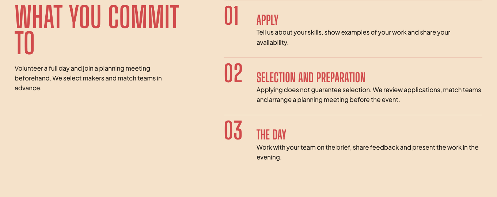
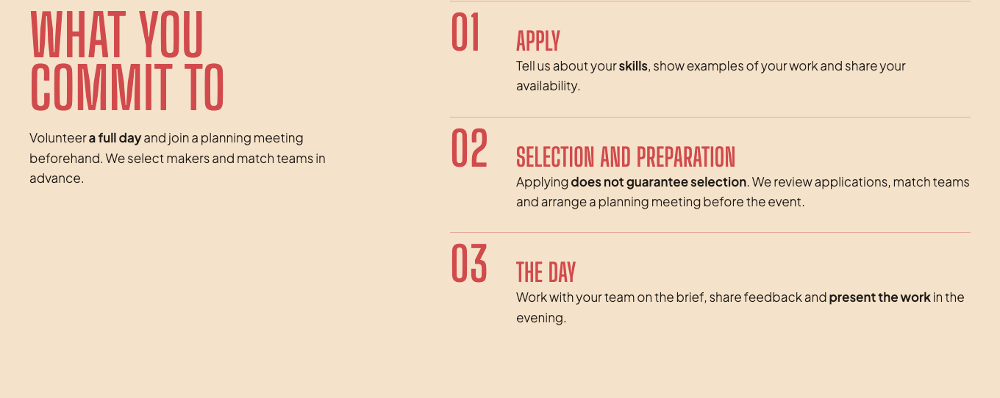
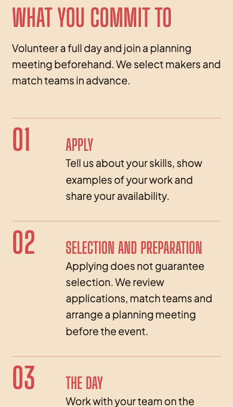
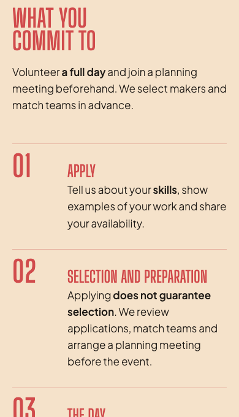
This is the main taste decision. The preview uses a real 300 font, not reduced opacity or a CSS weight that silently falls back to 400. Adding that face is part of this option. Source
T02
Weight + meaning · Recommended
Give emphasis a clear job.
The current explanatory paragraphs have almost no internal emphasis, so a quick scan gives each phrase similar importance.
The proposal. Use Semibold 600 on one useful phrase per paragraph, such as “a full day” or “does not guarantee selection”. Keep the surrounding words light and preserve the copy.
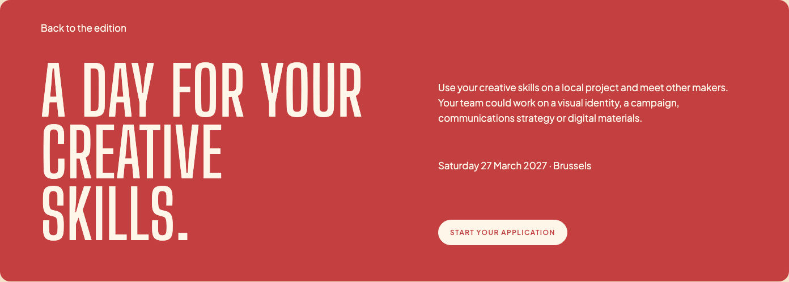


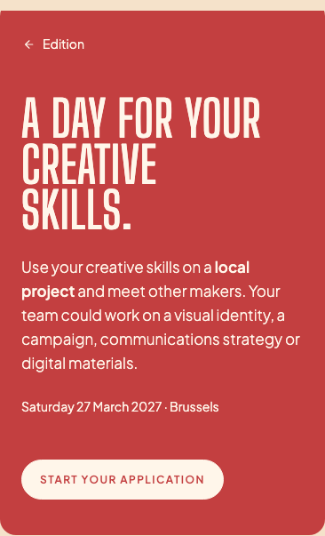
This pairs well with T01. The emphasis comes from weight rather than extra red text, extra words or larger type. Source
T03
Navigation · Recommended
Quiet the return link.
The back link currently uses the same 17px body size as the introduction and stretches across the hero grid.
The proposal. Use a 16px back arrow, a 14px “Edition” label and a 44px-high click target. Keep full-contrast cream and a visible focus state.


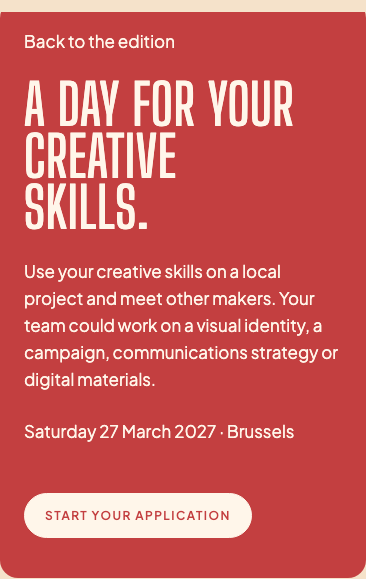

Arrow + label is my recommendation. If you prefer icon only, choose it below; it still needs a 44px target and an accessible “Back to the edition” name. Source
T04
Form typography · Recommended
Separate labels, answers and small print.
Form labels are currently 17px Semibold, the same size as entered answers. Help and privacy text drop to 13px, creating a large jump in reading density.
The proposal. Use 16px Semibold labels, keep entered answers at 17px Regular, and raise help/privacy/error text to 14px Regular. Keep required markers and error associations intact.
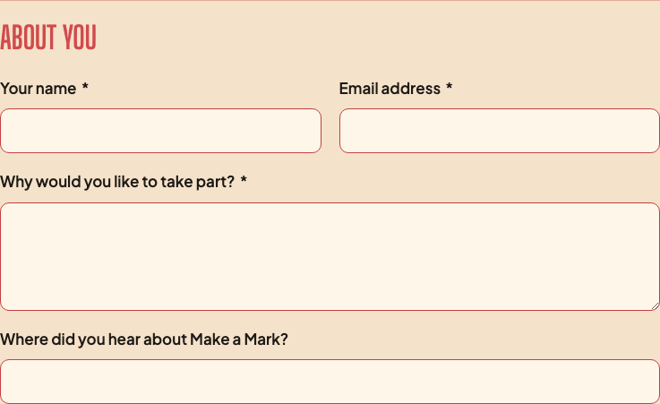
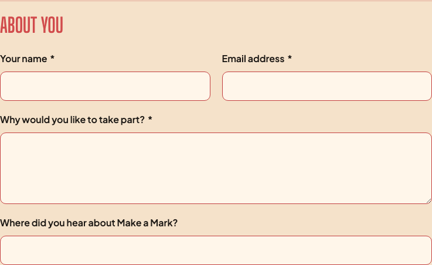
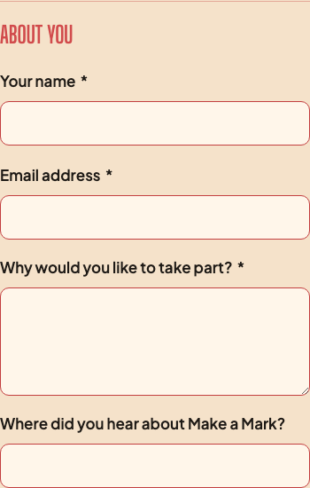
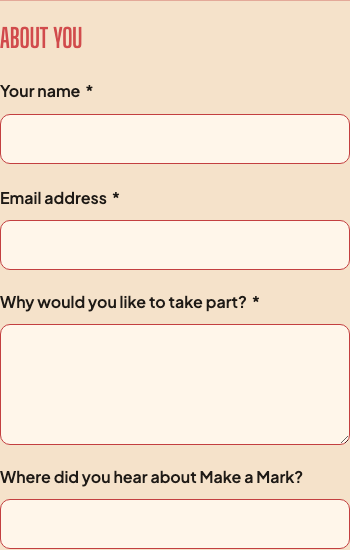
The form becomes quieter without making the supporting instructions faint or thin. Its Flux controls and layout stay the same. Source
T05
Hierarchy · Recommended
Treat the date as metadata.
The date and location currently use the same 17px Regular treatment as the paragraph above.
The proposal. Set the date/location line at 14px Regular so it reads as practical detail between the introduction and the application action.

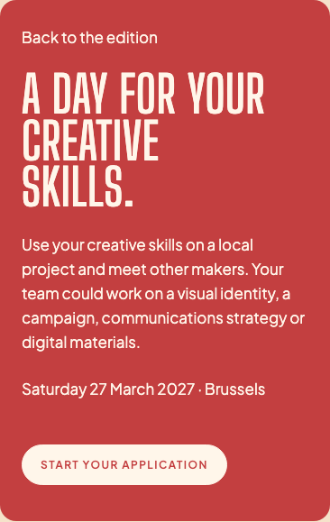
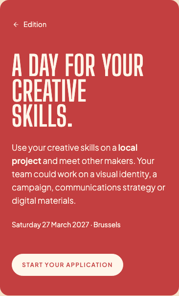
Keep the same wording, colour and position. This is a quieter supporting role, with no badge or decorative label. Source
T06
Wrapping + scale · Optional
Balance the section headings.
“What you commit to” can leave “to” alone on a line. The application title also uses the same 78px ceiling as the editorial section headings.
The proposal. Balance the commitment heading into natural phrases and cap the application title at 68px. Keep the 118px hero and 34px form-group legends.
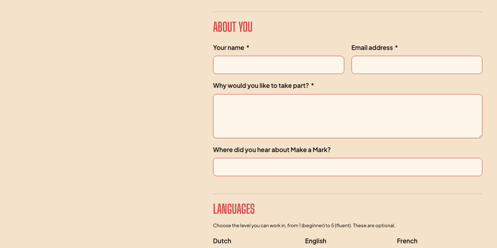
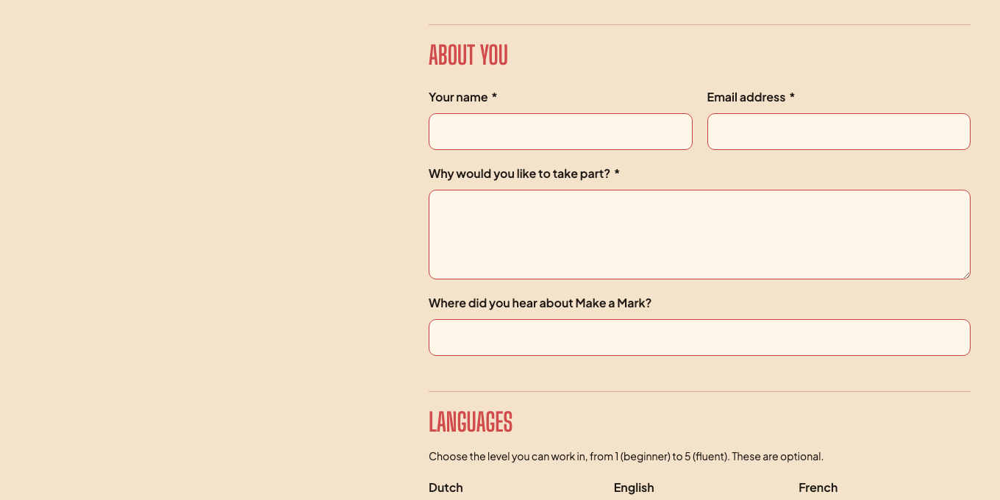
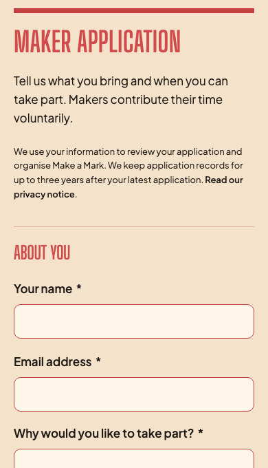
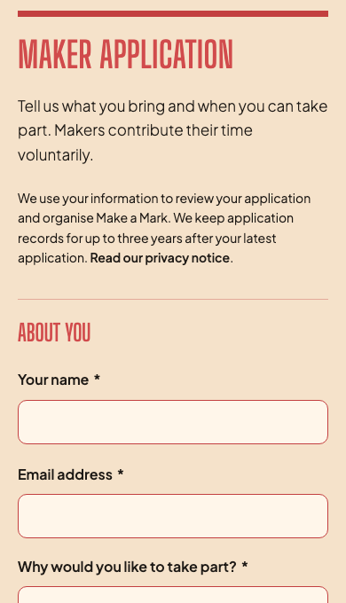
Optional. It gives the application a calmer introduction while keeping the page headline at full poster scale. Source
Evidence, font source and review boundaries
- Live computed values: body 400 / 17px / 27.2px; labels 600 / 17px / 25.5px; helper/privacy 400 / 13px / 20.8px; back link 400 / 17px.
- Current font declarations and font provenance establish that the current Jakarta assets are static 400 and 600. Merely writing font-weight:300 would still render the 400 face.
- The Light review face is instantiated from the official Google Fonts source. The OFL license and source font are preserved with the artifact.
- Mechanical type scan reports legacy off-scale values, a novelty warning for the pinned Jakarta family, and fallback-sidecar differences. Those do not justify replacing the brand font. The rendered assessment identified the body-weight and role refinements.
- The project design system supplied the families, palette and shapes. Proposed body sizes are expressed in rem, and the back action keeps a 44px target. Desktop/mobile proposals have zero horizontal overflow.
- This is a typography review, not a replacement identity or a form redesign. Shipping Light 300 would include proper font-face coverage/loading and fallback definitions; no production font or page file has been changed.